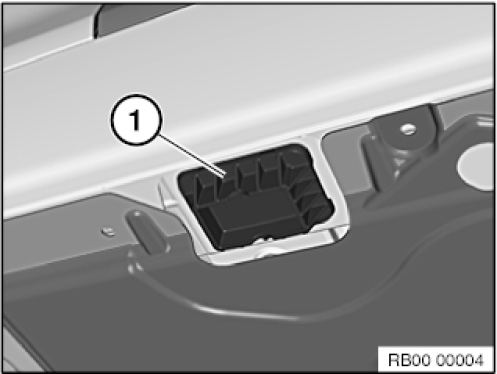
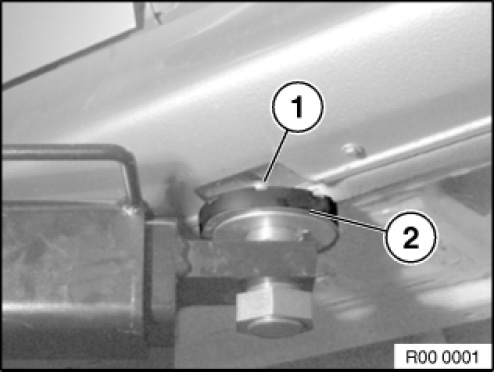
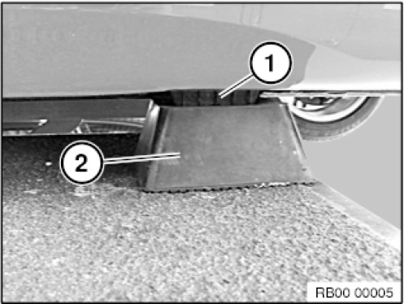

00 .. ... Lifting the Vehicle Using A Vehicle Hoist
00 .. ... Lifting the vehicle using a vehicle hoist

WARNING:
Danger to life.
Read and follow operating instructions for vehicle hoist.
Do not exceed approved load-carrying capacity and load distribution of vehicle hoist.
Weight compensation may be necessary due to the loading situation of the vehicle.
This also applies in the event of considerable removal of parts or conversions on the vehicle.
NOTE: The vehicle hoist must comply with the relevant statutory/country-specific accident prevention regulations and be serviced according to the regulations.

IMPORTANT:
Risk of damage.
Before driving onto a vehicle hoist, make sure there is sufficient ground clearance between the vehicle hoist and the vehicle.
The vehicle may only be raised with the vehicle hoist at the four jacking points.

IMPORTANT:
All four jacking points (1) must be available.
Never raise the vehicle without the jacking points (1).

IMPORTANT:
Risk of damage.
Align support plates (2) of lifting platform arms to jacking points (1) in such a way that no adjoining components are touched and thereby damaged.

IMPORTANT:
Risk of damage.
Align the rubber block (2) with the jacking points (1) in such a way that no adjoining components are touched and thereby damaged.
Never raise the vehicle without rubber blocks (or rigid foam blocks).
There is a major risk of damage to the vehicle underbody.